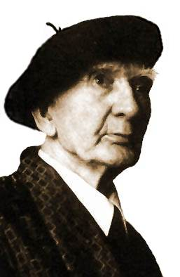

Ya que los cuerdos no hablan,
hablará el loco.
Yo, un loco que ha amado su locura,
sí, más que los cuerdos sus libros
sus bolsas y sus hogares tranquilos
o su fama en boca de los hombres.
Un loco que en todos sus días
nunca ha hecho una cosa prudente.
Nunca ha calculado el costo
ni contado lo que otra cosechaba
el fruto de su ingente siembra
contento con desparramar la semilla.
Un loco que es impenitente
y que pronto al final de todo
reirá en su corazón solitario
cuando el grano maduro caiga en los graneros,
y los pobres sean llenos que andaban vacíos,
aunque él ande hambriento... [*]
El Padre Leonardo Castellani, sacerdote y escritor argentino, tiene una extensa obra como ensayista, cuentista, novelista, teólogo, filósofo, periodista, poeta y crítico literario.
Ajeno a las ideologías que marcaron el siglo XX,
y mal pertrechado de prudencia mundana,
padeció la indiferencia y el silencio -cuando no la malevolencia- de los unos
y de los otros. Fue un marginal, un ermitaño
urbano (como él mismo se llamaba) que, en un medio hostil e ingrato,
hizo germinar sus talentos en una obra admirable.
Es, sin dudas, una de las figuras más notables que ha dado la cultura argentina
("... lo cual no es mucho decir" —agregaría él).
Tenemos un repaso y listado de su obra, una pequeña biografía y algunos textos de su autoría:
- Parábola del sepulcro y las víboras
- Fábulas camperas
- La verdad, de "San Agustín y nosotros"
- Cristo y los fariseos (fragmento)
- Carta a L. Barletta
- La verdadera historia de Santa Taís de Alejandría
- Poesías
- El caballo con alas
[*] Los versos que aparecen al comienzo ("Ya que los cuerdos no hablan...") pertenecen al poeta irlandés Padraic Pearse, muerto en 1916; forman parte del poema "El loco", traducido por el mismo Castellani y publicado en la revista "Jauja". Versión completa